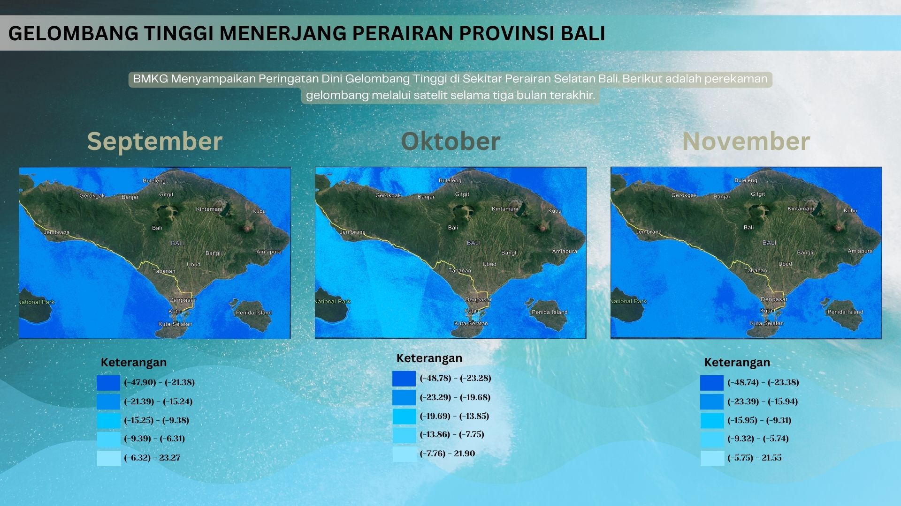

Gelombang Tinggi Menerjang Perairan Provinsi Bali
BMKG menyampaikan peringatan dini gelombang tinggi di sekitar perairan selatan Bali.

Tak lama ini BMKG mengeluarkan peringatan dini terkait dengan gelombang tinggi di beberapa wilayah. Peringatan ini dikeluarkan apa bila di beberapa wilayah diperkirakan akan memiliki gelombang yang lebih tinggi dari 1,25 meter. Umumnya peringatan ini akan berlaku selama 12 jam hingga maksimal 2 hari sejak dikeluarkannya peringatan. Per tanggal 5 Desember, wilayah yang diperkirakan memiliki gelombang tinggi cukup banyak. Pada informasi peringatan, wilayah tersebut diklasifikasikan menjadi dua kelompok yaitu wilayah dengan perkiraan tinggi gelombang 1,5 hingga 2,5 meter dan wilayah dengan perkiraan tinggi gelombang 2,5 hingga 4 meter. Salah satu wilayah yang terdampak gelombang tinggi ini adalah pada Samudera Hindia Selatan di bawah Pulau Jawa hingga Nusa Tenggara Timur (NTT). Dalam kajian ini, wilayah yang diteliti adalah perairan selatan Bali. Di atas adalah peta historis akumulasi gelombang tinggi dari tiga bulan terakhir yaitu September, Oktober, dan November. Dengan berikut adalah rincian dinamika ketinggiannya dengan perubahan yang tak menentu setiap bulannya.
| Tanggal | Ketinggian Gelombang |
|---|---|
| 1 September 2024 | -10.179 |
| 5 September 2024 | -16.141 |
| 8 September 2024 | -18.57 |
| 13 September 2024 | -12.423 |
| 17 September 2024 | -18.185 |
| 20 September 2024 | -22.105 |
| 25 September 2024 | -15.06 |
| 29 September 2024 | -15.029 |
| Tanggal | Ketinggian Gelombang |
|---|---|
| 2 Oktober 2024 | -19.013 |
| 7 Oktober 2024 | -11.632 |
| 11 Oktober 2024 | -15.971 |
| 14 Oktober 2024 | -19.369 |
| 19 Oktober 2024 | -10.32 |
| 23 Oktober 2024 | -17.058 |
| 26 Oktober 2024 | -14.279 |
| Tanggal | Ketinggian Gelombang |
|---|---|
| 4 November 2024 | -15.471 |
| 7 November 2024 | -19.491 |
| 12 November 2024 | -11.447 |
| 16 November 2024 | -17.472 |
| 19 November 2024 | -21.869 |
| 24 November 2024 | -13.826 |
| 28 November 2024 | -15.268 |
Melalui tabel di atas dapat terlihat bahwa pada akhir November terjadi kenaikan gelombang. Hal ini tidak semata-mata terjadi begitu saja. BMKG menyatakan bahwa terdapat bibit siklon 91S pada koordinat (9.5° LS; 105° BT) di Samudera Hindia barat daya Banten. Siklon ini bergerak menuju arah barat yang berdampak terhadap meningkatnya pergerakan angin yang tentunya akan mempengaruhi ketinggian gelombang juga. Masyarakat Bali yang notabenenya sering melakukan kegiatan yang berkaitan dengan pantai dan laut tentu dapat lebih waspada dan melakukan antisipasi hal-hal yang tidak diinginkan, sehingga keselamatan bersama tetap terjaga.